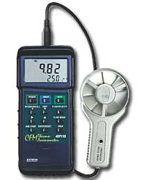
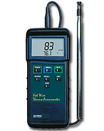
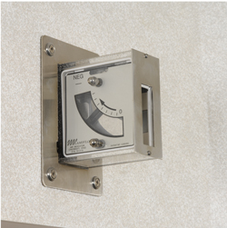

| Heavy Duty CFM Metal Vane Anemometer | |||
|  |
Withstands temperatures to 175°F (80°C) and airspeed to 7880ft/min Display Air Flow (CFM) or Air Velocity plus Temperature Air Flow displayed in 3 modes: - Instantaneous value - Up to 20 point average or - 2/3 flow value Record and Recall MIN, MAX Data Hold plus Auto power off Built-in RS-232 PC Interface |
||
| Heavy Duty Hot Wire Thermo-Anemometer | |||
|  |
Telescoping probe is designed to fit into small openings and measure airflow down to 40ft/min Telescoping probe is ideal for measuring in HVAC ducts and other small vents; extends up to 4ft (1.22m) long. Super large 1.4" (36mm) dual LCD display. Min/Max, Data Hold |
||
| Air Flow Indicators | |||||||||||||||
|  |
Special Features:
|
||||||||||||||
|
|||||||||||||||